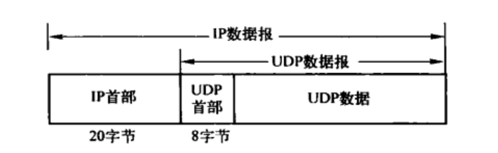
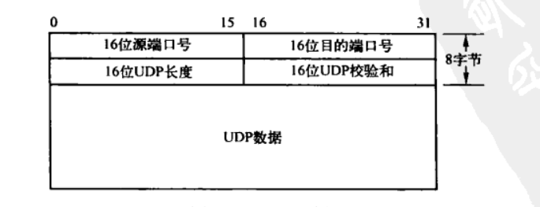
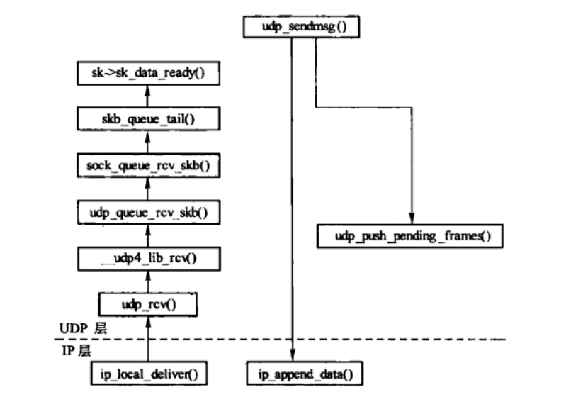
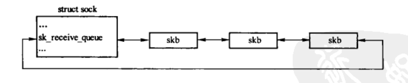
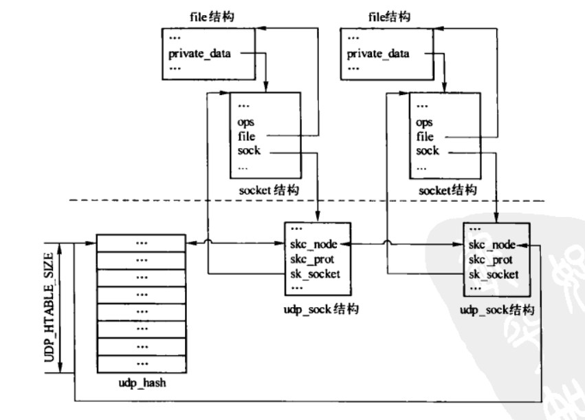
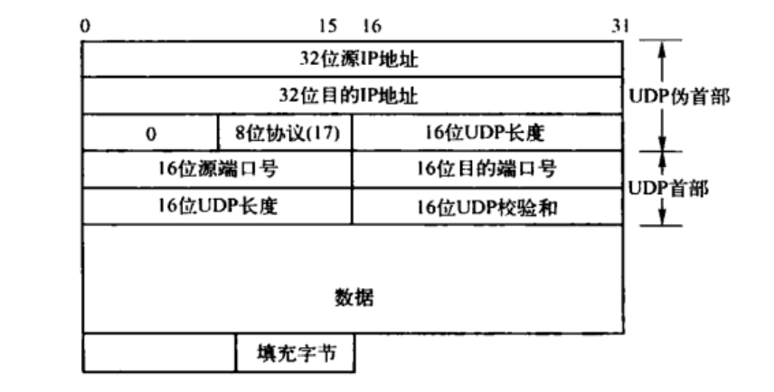
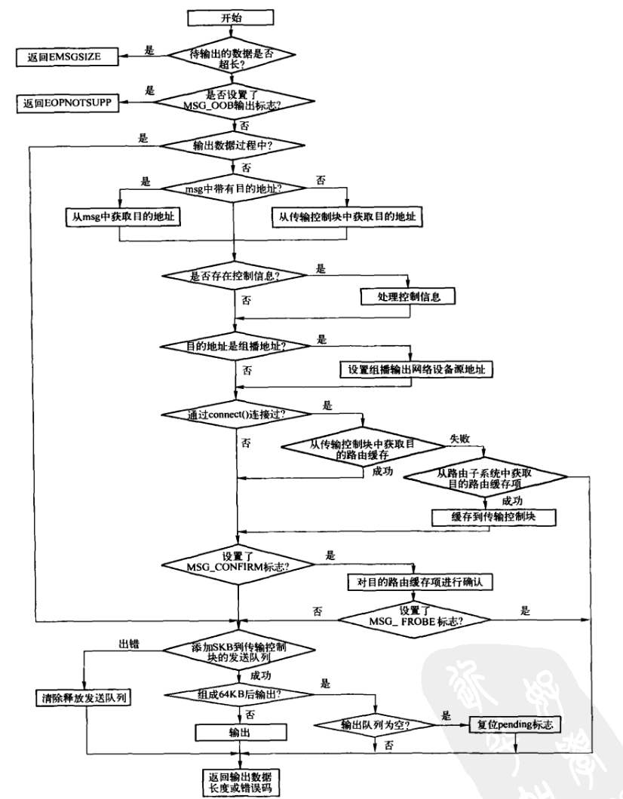
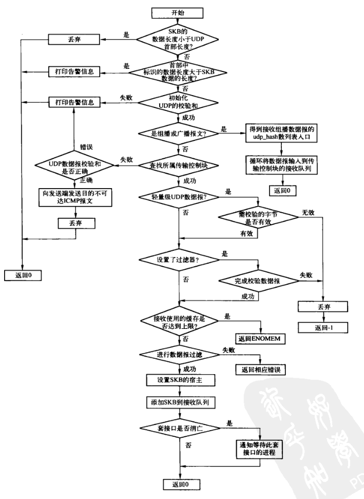
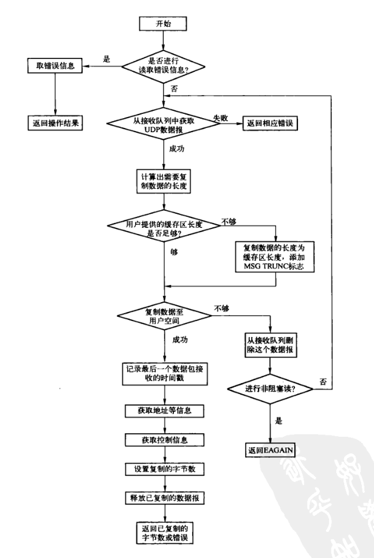

UDP：用户数据报
Table of Contents
1. 引言
UDP是一个简单的面向数据报的传输层协议：进程的每个输出操作通常都会产生一个UDP数据报，并组装成一份待发送的IP数据报。这与面向流的协议不同，例如TCP，应用程序产生的数据与真正发送的单个IP数据报不能存在直接的关联。UPD数据报封装成IP数据报的格式。

Figure 1: UDP封装
UDP不提供可靠性，它把应用程序传给IP层的数据发送出去，但并不保证他们能到达目的地。应用程序必须关心IP数据报的长度，如果它超过网络MTU，则需要对IP数据报进行分片。源端到目的端之间的每一段都有可能进行分片，不只是发送方主机。
1.1. UPD首部
UDP首部各自段如下图：

Figure 2: UDP首部
端口号用来标识发送和接收进程。UDP长度字段指的是UDP首部和UDP数据的总字节数，该字段的最小值为8，即无UDP数据报。IP数据报长度指的是整个IP数据报的总长度，因此UDP长度是拥IP长度减去IP首部长度。
1.2. UDP的输入与输出
进程输出一个UDP数据报时，通常会在IP层组装成一个对应的IP数据报。但实际上并不一定是如此，可以由UDP_CROK选项来确定发送的UDP数据是否组成一个单独的IP数据报发送。当UDP_CORK选项值为非0时，即一个UDP数据对应一个IP数据报，会有延迟。
UDP函数调用关系如下：

Figure 3: UDP函数调用关系
和TCP一样，sock结构中的sk_receive_queue成员是UDP的接收队列，通常情况下，接收到的UDP数据报会缓存到此，等待用户进程的读取。UDP接收到数据报后，通过校验UDP数据报，根据类型（IPSEC封装、组播、单播）作不同的处理后被添加到接收队列。

Figure 4: UDP接收队列
UDP传输控制块中的sk_receive_queue是存储已接收待传递到用户空间的UDP数据报的双向链表的表头。
2. UDP的inet_protosw结构
static struct inet_protosw inetsw_array[] = { //...... { .type = SOCK_DGRAM, //套接口类型 .protocol = IPPROTO_UDP, //UDP协议类型 .prot = &udp_prot, ///UDP传输层操作接口 .ops = &inet_dgram_ops, //UDP套接口层操作接口 .capability = -1, /*在创建UDP套接口时需要检验创建该套接口的进程是否有这种能力， capability为 -1表示无需作校验 */ .no_check = UDP_CSUM_DEFAULT, /* UDP的校验和是可选的，UDP_CSUM_DEFAULT标识 UDP需要进行正常的校验和操作*/ .flags = INET_PROTOSW_PERMANENT, //表示不能作为内核模块进行动态的加载或卸载。 }, //...... };
3. UDP的传输控制块
UDP协议的传输控制块用udp_sock结构表示，是对inet_sock结构的扩展。
struct udp_sock { /* inet_sock has to be the first member */ struct inet_sock inet; /** 发送状态，只能是0或者AF_INET + 0 表示数据已经从UDP套接口发送到IP层，可以继续调用sendmsg()发送数据 + AF_INET UDP正在处理调用sendmsg的发送数据，不需要处理目的地址、路由信息， 直接处理UDP数据*/ int pending; /** 宝石发送UDP数据是否组成一个单独的IP数据报发送，由UDP的UDP_CORK选项设置 + 0 有数据需要发送时，立即发送 + 非0 将UDP数据组成一个单一64KB的UDP数据报后才进行发送，因此会有延迟*/ unsigned int corkflag; /* Cork is required */ /* 表示本套接口是否通过IPSEC封装，由UDP的UDP_ENCAP套接口选项设置，一般在IKE程序打开 UDP端口4500时设置*/ __u16 encap_type; /* Is this an Encapsulation socket? */ /* 从UDP套接口发送数据到IP层时，表示待发送数据的长度*/ __u16 len; /* total length of pending frames */ /** 轻量级UDP，通过UDPLITE_SEND_CSCOV和UDPLITE_RECV_CSCOV选项设置，用于实现 控制发送和接收校验和的执行 pcslen/pcrlen取值： + 值为0 表示对发送/接收的整个UDP-Lite数据包进行校验 + 值>=8 表示对发送/接收UDP-Lite包的前pcslen/pcrlen个字节进行校验 + 其他值非法 */ __u16 pcslen; __u16 pcrlen; /* indicator bits used by pcflag: */ #define UDPLITE_BIT 0x1 /* 表示该套接口是否为轻量级UDP */ #define UDPLITE_SEND_CC 0x2 /* 设置了选项UDPLITE_SEND_CSCOV */ #define UDPLITE_RECV_CC 0x4 /* 设置了选项UDPLITE_RECV_CSCOV */ /* 按位存储，表示是否设置了UDPLITE_SEND_CSCOV或UDPLITE_RECV_CSCOV选项*/ __u8 pcflag; };
4. UDP的proto结构和proto_ops结构的实例
UDP协议的传输层接口是udp_prot，套接口层接口为inet_dgram_ops。
5. UDP的状态
UDP的传输是没有状态的，但事实上，UDP和RAW也借用了TCP中的一些值：在一个套接口创建之初，其状态都是TCP_CLOSE，当UDP套接口调用了connect()后，状态改变为TCP_ESTABLISHED，最后，关闭套接口时又置回TCP_CLOSE，RAW也是如此。
6. UDP传输控制块的管理
与TCP不同，UDP并不是在hash接口中将其传输控制块添加到udp_hahs散列表中的，而是在绑定端口后，才将其添加到散列表中，关键字为端口号与散列表大小取模后的值。
和TCP一样，成功创建一个UDP传输控制块后，也需要对其进行合理的管理。由于UDP没有状态的迁移，因此管理比TCP容易很多。但并非所有的UDP传输控制块都是在散列表中管理的，只有当套接口绑定了端口后，此时可接收或发送数据，才会添加到散列表中管理。udp_hash散列表，大小为UDP_HTABLE_SIZE。套接口一旦绑定端口添加到散列表后，直到关闭才会从散列表删除。
UDP传输层中只使用一个udp_hash散列表来管理UDP传输控制块，如下图：

Figure 5: UDP传输控制块的散列表
UDP传输控制块在udp_hash散列表中的添加与删除，参见bind系统调用的实现与UDP套接口的关闭。
7. bind系统调用的实现
UDP的绑定实际上完成两个功能，根据选取的合适端口号将传输控制块添加到udp_hash散列表中，并将端口号设置到传输控制块中。
bind的调用过程比较简单，首先根据套接口的文件描述符获取对应的传输控制块，然后调用套接口层bind接口inet_bind()，最后调用到传输层接口。在inet_bind()中，如果是原始IP则调用bind接口进行绑定，其他的包括TCP和UDP则调用get_port接口进行绑定。
在UDP中实现传输接口层get_port接口的函数是udp_v4_get_port()，它只是一个接口函数，而真正实现bing功能的是__udp_lib_get_port()。udp_v4_get_port封装了udp_get_port()，udp_get_port()有封装了__udp_lib_get_port()。相对于udp_v4_get_port()，udp_get_port()多了一个参数scmp，该参数是一个函数指针，在此实际传入的是ipv4_rcv_saddr_equal()，用于比较两个传输控制块的接收地址是否相等。
/** * UDP * get_port() --> udp_v4_get_port() * |--> udp_get_port() * |--> __udp_lib_get_port() * */ static inline int udp_v4_get_port(struct sock *sk, unsigned short snum) { return udp_get_port(sk, snum, ipv4_rcv_saddr_equal); } /** ipv4_rcv_saddr_equal()比较两个传输控制块本地绑定地址相等的条件是，传输控制块支持IPv4， 两者相等且都不为空。 */ inline int ipv4_rcv_saddr_equal(const struct sock *sk1, const struct sock *sk2) { struct inet_sock *inet1 = inet_sk(sk1), *inet2 = inet_sk(sk2); return ( !ipv6_only_sock(sk2) && (!inet1->rcv_saddr || !inet2->rcv_saddr || inet1->rcv_saddr == inet2->rcv_saddr )); } __inline__ int udp_get_port(struct sock *sk, unsigned short snum, int (*scmp)(const struct sock *, const struct sock *)) { return __udp_lib_get_port(sk, snum, udp_hash, &udp_port_rover, scmp); }
__udp_lib_get_port多了两个参数udp_hash和udp_port_rover。前者用于管理UDP传输控制块散列表，后者是个全局变量，用于记录最近一次自动绑定的端口号，下次自动绑定端口时，在从udp_port_rover开始尝试。
__udp_lib_get_port()完成真正的绑定操作。如果指定了端口，则绑定过程是很简单的，首先检测端口是否可用，检测通过后进行绑定。如果未指定端口，则自动选择一个合适的端口进行绑定。选择合适的端口是为了使UDP传输控制块在udp_hash散列表中的分布比较均匀，即散列表的每个桶存储的UDP传输控制块差不多。
因此选择可用端口号的方法并不是简单的递增查找未使用的端口号，而是尝试着从记录标记开始递增端口号并遍历散列表中的所有链表，得到一个端口号，该端口号可得到散列表桶内控制块最少那个桶的关键字。该端口号并不能保证能够使用，因为还确定其是否已经被绑定，检测该端口是否正在使用。如果没有使用，则查找结束，否则对该端口号递增一个散列表大小，即UDP_HTABLE_SIZE，之后再次检测。如此不断重复，知道得到可用端口号或查找失败为止。如果找到可用端口号则记录之，下次绑定时从此端口号开始尝试查找可用端口号。
/** * __udp_lib_get_port - UDP/-Lite port lookup for IPv4 and IPv6 * * @sk: socket struct in question * @snum: port number to look up * @udptable: hash list table, must be of UDP_HTABLE_SIZE * @port_rover: pointer to record of last unallocated port * @saddr_comp: AF-dependent comparison of bound local IP addresses */ int __udp_lib_get_port(struct sock *sk, //待绑定传输控制块 unsigned short snum, //绑定的端口号 struct hlist_head udptable[], //管理UDP传输控制块的散列表 int *port_rover, //最近一次自动绑定的端口号 int (*saddr_comp)(const struct sock *sk1, //用于比较两个传输控制块的接收地址是否相等 const struct sock *sk2 ) ) { struct hlist_node *node; struct hlist_head *head; struct sock *sk2; int error = 1; write_lock_bh(&udp_hash_lock); if (snum == 0) { int best_size_so_far, best, result, i; //如果udp_port_rover不在指定范围内时，则被强制指定为指定范围的最小值 if (*port_rover > sysctl_local_port_range[1] || *port_rover < sysctl_local_port_range[0]) *port_rover = sysctl_local_port_range[0]; /** 为了使UDP传输控制块在udp_hash散列表分布比较均匀，因此选择可用端口号的方法 并不是简单的递增查找未使用端口号，而是尝试着从记录标记开始递增端口号并遍历散列表 中所有的链表，得到一个端口号，可计算得到桶内控制块数量最少的那个桶的关键字。 如果一个桶内的链表长度为0，则可以确定计算得到该桶关键字的端口必定没有使用， 因此查找结束，否则需确认查找到的端口号是否正在被使用。*/ best_size_so_far = 32767; best = result = *port_rover; for (i = 0; i < UDP_HTABLE_SIZE; i++, result++) { int size; head = &udptable[result & (UDP_HTABLE_SIZE - 1)]; if (hlist_empty(head)) { if (result > sysctl_local_port_range[1]) result = sysctl_local_port_range[0] + ((result - sysctl_local_port_range[0]) & (UDP_HTABLE_SIZE - 1)); goto gotit; } size = 0; sk_for_each(sk2, node, head) { if (++size >= best_size_so_far) goto next; } best_size_so_far = size; best = result; next: ; } /** 此时查找到的端口号，并不能保证可以使用，因为并不确定该端口是否已经被绑定。 因此，需要检测该端口是否正在被使用。如果没有使用，则查找结束，否则对该端口 增加一个散列表大小后再次检测。如此反复，知道获得可用的端口号或确定没有可用的 端口号为止。*/ result = best; for(i = 0; i < (1 << 16) / UDP_HTABLE_SIZE; i++, result += UDP_HTABLE_SIZE) { if (result > sysctl_local_port_range[1]) result = sysctl_local_port_range[0] + ((result - sysctl_local_port_range[0]) & (UDP_HTABLE_SIZE - 1)); if (! __udp_lib_lport_inuse(result, udptable)) break; } if (i >= (1 << 16) / UDP_HTABLE_SIZE) goto fail; /** 如果查找到可用的端口号，则保存该端口号，同时更新全局变量udp_port_rover, 下次再自动绑定端口时，再从udp_port_rover的值起开始查找。*/ gotit: *port_rover = snum = result; } else { /** 如果指定了端口，则根据端口号得到该散列表的入口，并遍历该链表检测该端口 是否可以使用。一旦检测到该指定端口号不能使用，则返回对应的错误*/ head = &udptable[snum & (UDP_HTABLE_SIZE - 1)]; sk_for_each(sk2, node, head) if (inet_sk(sk2)->num == snum && sk2 != sk && (!sk2->sk_reuse || !sk->sk_reuse) && (!sk2->sk_bound_dev_if || !sk->sk_bound_dev_if || sk2->sk_bound_dev_if == sk->sk_bound_dev_if) && (*saddr_comp)(sk, sk2) ) goto fail; } /** 确定端口号可使用后，则将端口号设置到传输控制块中，并将该传输控制块添加到udp_hash 散列表中*/ inet_sk(sk)->num = snum; if (sk_unhashed(sk)) { head = &udptable[snum & (UDP_HTABLE_SIZE - 1)]; sk_add_node(sk, head); sock_prot_inc_use(sk->sk_prot); } error = 0; fail: //绑定失败，则返回错误 write_unlock_bh(&udp_hash_lock); return error; }
8. UDP套接口的关闭
关闭套接口后，通过文件系统到套接口，最终调用到对应的传输接口层的close接口。通过UDP的proto结构udp_prot，UDP的传输接口层的close接口为udp_lib_close()，通过对传输接口层的unhash接口的调用，将传输控制块从散列表删除。
udp_lib_close()
sk_common_release()
sk->sk_prot->destory-----> udp_destory_socket() (proto)
udp_flush_pending_frames()
release_sock()
sk->sk_prot->unhash()----->udp_lib_unhash() (proto)
sk_del_node_init()
udp_lib_close直接调用了sk_common_release()。
sk_common_release()是一个较为通用的函数，在创建套接口后初始化失败、关闭UDP套接口和原始IP套接口时都会调用该函数。
void sk_common_release(struct sock *sk) { /* 调用传输接口层的destroy接口，在传输控制块释放前作清理工作。实现UDP传输接口层 destroy接口的函数为udp_destroy_sock()。 */ if (sk->sk_prot->destroy) sk->sk_prot->destroy(sk); /* * Observation: when sock_common_release is called, processes have * no access to socket. But net still has. * Step one, detach it from networking: * * A. Remove from hash tables. */ /* 调用传输接口层的unhash接口，将传输控制块从管理散列表删除。udp_lib_unhash()*/ sk->sk_prot->unhash(sk); /* * In this point socket cannot receive new packets, but it is possible * that some packets are in flight because some CPU runs receiver and * did hash table lookup before we unhashed socket. They will achieve * receive queue and will be purged by socket destructor. * * Also we still have packets pending on receive queue and probably, * our own packets waiting in device queues. sock_destroy will drain * receive queue, but transmitted packets will delay socket destruction * until the last reference will be released. */ //清理后设置为孤儿套接口 sock_orphan(sk); //释放有关IPSEC的传输策略 xfrm_sk_free_policy(sk); sk_refcnt_debug_release(sk); sock_put(sk); //递减引用计数，为0时，才可以释放 }
udp_destroy_sock()调用udp_flush_pending_frames()将未发送的数据发送出去，如果有等待该传输控制块的进程，则将它们唤醒。
udp_lib_unhash()调用sk_del_node_init()从udp_hahs散列表中删除传输控制块。
9. connect系统调用的实现
UDP虽然不是基于连接的协议，但是也提供了connect系统调用。通过调用connect()，传输控制块记录目的地址和目的端口，并且根据这两者选择目的路由。这样发送数据时就可以通过调用write()或send()，而不需要调用sendto，写到已连接UDP套接口上的任何内容都会自动发送到由connect()指定的地址和端口。
同样，在接收数据时，也可以不必调用recvfrom()以获取数据报的发送者，而可用read()，recv()或recvmsg()。因为在一个已连接UDP套接口上接收到的内核为输入操作返回的数据报，只能是那些来自connect()所指定协议地址的数据报。目的地址为该已连接UDP套接口的本地地址，而发送方不是该套接口早先connect()到的地址的数据报，是不会投递到该套接口的。这样就限制了一个已连接UDP套接口只能与一个对端交换数据报。
inet_dgram_connect()为connect在UDP套接口层的实现。
int inet_dgram_connect(struct socket *sock, struct sockaddr * uaddr, int addr_len, int flags) { struct sock *sk = sock->sk; //地址族无效，则调用传输接口层的disconnect接口，即udp_disconnect() if (uaddr->sa_family == AF_UNSPEC) return sk->sk_prot->disconnect(sk, flags); //如果没有设置端口号，则动态选择一个空闲的端口绑定 if (!inet_sk(sk)->num && inet_autobind(sk)) return -EAGAIN; //调用传输接口层的connect接口 ip4_datagram_connect()进行连接 return sk->sk_prot->connect(sk, (struct sockaddr *)uaddr, addr_len); }
9.1. udp_disconnect()
udp_disconnect()是传输接口层UDP的disconnect接口的实现，复位传输控制块的状态、目的地址、目的端口、本地端口、输出接口以及目的路由缓存。
int udp_disconnect(struct sock *sk, int flags) { struct inet_sock *inet = inet_sk(sk); /* * 1003.1g - break association. */ //复位传输控制块的状态、目的地址、目的端口以及输出接口 sk->sk_state = TCP_CLOSE; inet->daddr = 0; inet->dport = 0; sk->sk_bound_dev_if = 0; //如果已绑定本地端口，则复位本地端口 if (!(sk->sk_userlocks & SOCK_BINDADDR_LOCK)) inet_reset_saddr(sk); //如果绑定本地端口，则将该传输控制块从udp_hash散列表删除 if (!(sk->sk_userlocks & SOCK_BINDPORT_LOCK)) { sk->sk_prot->unhash(sk); inet->sport = 0; } //复位待断开连接的传输控制块的目的路由缓存 sk_dst_reset(sk); return 0; }
9.2. ip4_datagram_connect()
ip4_datagram_connect()是传输接口层UDP的connect接口的实现。首先复位传输控制块的目的路由缓存，再根据目的地址得到输出路由缓存，最后将查询得到的路由缓存中的源地址、目的地址、目的端口以及目的路由缓存更新到传输控制块中。
int ip4_datagram_connect(struct sock *sk, struct sockaddr *uaddr, int addr_len) { struct inet_sock *inet = inet_sk(sk); struct sockaddr_in *usin = (struct sockaddr_in *) uaddr; struct rtable *rt; __be32 saddr; int oif; int err; //校验usin的长度以及地址族 if (addr_len < sizeof(*usin)) return -EINVAL; if (usin->sin_family != AF_INET) return -EAFNOSUPPORT; /* 在连接传输控制块之前可能传输过数据，可能存在目的路由缓存， 因此需要复位待连接传输控制块的目的路由缓存 */ sk_dst_reset(sk); /* 确定输出接口和源地址*/ oif = sk->sk_bound_dev_if; saddr = inet->saddr; if (MULTICAST(usin->sin_addr.s_addr)) { if (!oif)//目的地址是组播地址时，如果没有确定输出接口，则重新确定 oif = inet->mc_index; if (!saddr)//目的地址是组播地址时，如果没有确定源地址，则重新确定 saddr = inet->mc_addr; } //查询输出路由，查询失败，则返回对应的错误 err = ip_route_connect(&rt, usin->sin_addr.s_addr, saddr, RT_CONN_FLAGS(sk), oif, sk->sk_protocol, inet->sport, usin->sin_port, sk); if (err) return err; //路由的目的地址是广播地址，但是套接口不支持广播数据报的输出，则返回错误 if ((rt->rt_flags & RTCF_BROADCAST) && !sock_flag(sk, SOCK_BROADCAST)) { ip_rt_put(rt); return -EACCES; } /** 将路由缓存项的源地址、目的地址以及目的端口更新到传输控制块中， 同时更新用于设置到IP首部中的id域*/ if (!inet->saddr) inet->saddr = rt->rt_src; /* Update source address */ if (!inet->rcv_saddr) inet->rcv_saddr = rt->rt_src; inet->daddr = rt->rt_dst; inet->dport = usin->sin_port; sk->sk_state = TCP_ESTABLISHED; inet->id = jiffies; //将目的路由缓存项缓存到传输控制块中。 sk_dst_set(sk, &rt->u.dst); return(0); }
10. select系统调用的实现
select是通用文件系统的系统调用，因此在调用过程中很多代码都是在通用文件系统中实现，而套接口文件系统实现了poll接口，只需根据当前传输控制块的状态、接收到的数据等返回相应的标志即可。文件系统提供了一系列的标志，来表示文件当前的状态。
| select()返回的标志 | 描述 |
|---|---|
| POLLIN/POLLRDNORM | 文件可以正常读 |
| POLLPRI | 高优先级数据（带外）可以读取 |
| POLLOUT/POLLWRNORM | 可以写数据到文件而不被阻塞 |
| POLLERR | 文件在写过程中发生了错误 |
| POLLHUP | 无法继续读写文件。对于套接口文件，则因为关闭了读写后，无法继续读写文件 |
| POLLNVAL | 无效的请求，例如文件没有打开 |
| POLLRDBAND | 从文件中可以读取带外数据。当前只用在Linux内核网络模块的decnet中 |
| POLLWRBAND | 可以写带有零优先级的数据到文件中。当前只用在Linux内核网络模块的decnet中 |
| POLLRDHUP | 基于连接的套接口，对方关闭了连接或者本方进行读的半关闭，从而不允许继续接收数据 |
/** * udp_poll - wait for a UDP event. * @file - file struct * @sock - socket * @wait - poll table * * This is same as datagram poll, except for the special case of * blocking sockets. If application is using a blocking fd * and a packet with checksum error is in the queue; * then it could get return from select indicating data available * but then block when reading it. Add special case code * to work around these arguably broken applications. */ unsigned int udp_poll(struct file *file, struct socket *sock, poll_table *wait) { //根据传输控制块的各种信息，pool得到当前的标志 unsigned int mask = datagram_poll(file, sock, wait); struct sock *sk = sock->sk; //确定是否为轻量级UDP int is_lite = IS_UDPLITE(sk); /** 如果文件的读写是在阻塞模式下，且文件能正常读，同时至少没有进行读半关闭， 在这种情况下，检测已接收到的第一个UDP数据报校验和，如果检测失败则丢弃，继续校验后面 的UDP数据报，直至校验通过或接收队列中没有数据报为止。如果最后接收队列中没有数据了， 即接收队列中没有数据包通过校验和检测，则去除POLLIN及POLLRDNORM标志*/ /* Check for false positives due to checksum errors */ if ( (mask & POLLRDNORM) && !(file->f_flags & O_NONBLOCK) && !(sk->sk_shutdown & RCV_SHUTDOWN)){ struct sk_buff_head *rcvq = &sk->sk_receive_queue; struct sk_buff *skb; spin_lock_bh(&rcvq->lock); while ((skb = skb_peek(rcvq)) != NULL) { if (udp_lib_checksum_complete(skb)) { UDP_INC_STATS_BH(UDP_MIB_INERRORS, is_lite); __skb_unlink(skb, rcvq); kfree_skb(skb); } else { skb->ip_summed = CHECKSUM_UNNECESSARY; break; } } spin_unlock_bh(&rcvq->lock); /* nothing to see, move along */ if (skb == NULL) mask &= ~(POLLIN | POLLRDNORM); } return mask; }
/** * datagram_poll - generic datagram poll * @file: file struct * @sock: socket * @wait: poll table * * Datagram poll: Again totally generic. This also handles * sequenced packet sockets providing the socket receive queue * is only ever holding data ready to receive. * * Note: when you _don't_ use this routine for this protocol, * and you use a different write policy from sock_writeable() * then please supply your own write_space callback. */ unsigned int datagram_poll(struct file *file, struct socket *sock, poll_table *wait) { struct sock *sk = sock->sk; unsigned int mask; //由于进程在poll过程中会存在睡眠，因此把当前进程添加到传输控制块的睡眠队列sk_sleep中 poll_wait(file, sk->sk_sleep, wait); mask = 0; //如果传输控制块中有错误发生，则设置POLLERR标志。 /* exceptional events? */ if (sk->sk_err || !skb_queue_empty(&sk->sk_error_queue)) mask |= POLLERR; //如果套接口接收通道已经关闭，不允许继续接收数据，则在POLLRDHUP位添加标志 if (sk->sk_shutdown & RCV_SHUTDOWN) mask |= POLLRDHUP; //如果接收和发送通道都关闭，则设置POLLHUP标志 if (sk->sk_shutdown == SHUTDOWN_MASK) mask |= POLLHUP; //如果传输控制块的接收队列存在数据，则设置iPOLLIN及POLLRDNORM标志 /* readable? */ if (!skb_queue_empty(&sk->sk_receive_queue) || (sk->sk_shutdown & RCV_SHUTDOWN)) mask |= POLLIN | POLLRDNORM; /** 如果是基于连接的传输控制块，则当其状态为CLOSE时，添加POLLHUP标志； 状态为SYN_SENT时，说明连接尚未建立，不能接收数据，因此不用考虑写的情况，直接返回标志。*/ /* Connection-based need to check for termination and startup */ if (connection_based(sk)) { if (sk->sk_state == TCP_CLOSE) mask |= POLLHUP; /* connection hasn't started yet? */ if (sk->sk_state == TCP_SYN_SENT) return mask; } /** 如果传输控制块输出缓存区尚未达到上限，则表明可写，设置POLLOUT、POLLWRNORM以及 POLLWRBAND标志。否则设置异步的情况下该套接口的发送队列是否已满标志。*/ /* writable? */ if (sock_writeable(sk)) mask |= POLLOUT | POLLWRNORM | POLLWRBAND; else set_bit(SOCK_ASYNC_NOSPACE, &sk->sk_socket->flags); return mask; }
11. UDP的ioctl
UDP中的ioctl命令如下：
- SIOCOUTQ 返回标识该传输控制块为发送而分配的所有数据区的总大小。
- SIOCINQ 获取在接收队列缓存中第一个未读取数据报的长度。
11.1. UDP的套接口选项
从udp_prot和inet_dgram_ops的定义，可了解到UDP套接口选项入口为udp_setsockopt()。在该函数中会根据选项分别调用不同的函数处理–如果是SOL_UDP或者SOL_UDPLITE级别，则调用udp_lib_setsockopt(),否则通过IP接口调用ip_setsockopt()。
int udp_setsockopt(struct sock *sk, int level, int optname, char __user *optval, int optlen) { if (level == SOL_UDP || level == SOL_UDPLITE) return udp_lib_setsockopt(sk, level, optname, optval, optlen, udp_push_pending_frames); return ip_setsockopt(sk, level, optname, optval, optlen); }
UDP的套接口选项如下：
- UDP_CORK 确定发送的UDP数据是否组成一个单一的UDP数据报发送出去。如果值为0,则有数据需要发送时，立即组成一个UDP数据报发送出去；如果值为非0，则每个UDP数据报长度必须达到64KB才将其发送出去，因此会有延迟。
- UDP_ENCAP 切丁该套接口IPSEC封装方式，有效的的值为0、UDP_ENCAP_ESPINUDP和UDP_ENCAP_ESPINUDP_NON_IKE。
- UDPLITE_SEND_CSCOV和UDPLITE_RECV_CSCOV 用于控制轻量级UDP发送或接收校验和的执行。
- 当其值为0时，表示对发送和接收的整个轻量级UDP数据报进行校验
- 当其值大于等于8时，表示对发送和接收轻量级UDP数据报指定的前几个字节进行校验
- 其他值，非法。
12. UDP校验和
UDP校验和与TCP校验和类似，覆盖UDP首部及UDP数据，但UDP的校验和是可选的。UDP数据报同样包含一个12B长的伪首部，这是为了计算校验和而设置的。UDP数据报中的伪首部格式如下：

Figure 6: UDP校验和计算过程中使用的各个字段
如果发送方没有计算校验和而接收方检测到校验和有差错，则UDP数据报会被悄悄丢弃。不产生任何差错报文。
尽管UDP校验和是可选的，但通常总是会做UDP校验。关闭UDP校验和以提高性能在单个局域网中或许是可以接受的，但是在数据报经过路由器时，通过对链路层数据帧进行循环冗余检验（如以太网或者令牌环数据帧）可以检测到大多数的差错，会导致传输失败。无论相信与否，路由器中也存在软件和硬件差错，会修改数据报中的数据。如果关闭端到端的UDP校验和功能，那么这些差错就不能在UDP层被检测出来。此外，一些数据链路层协议（如SLIP）没有任何形式的数据链路层校验和。
UDP校验和选项默认是打开的，如果发送段已经计算了校验和，那么接收端必须检验接收到的校验和。
12.1. 输入UDP数据报校验和的计算
12.1.1. udp4_csum_init()
udp4_csum_init()用于UDP数据报接收校验和的初始化，只要是对伪首部进行校验和的计算。当然也有例外，如果校验和有硬件完成，则只对伪首部进行校验检测。
/* Initialize UDP checksum. If exited with zero value (success), * CHECKSUM_UNNECESSARY means, that no more checks are required. * Otherwise, csum completion requires chacksumming packet body, * including udp header and folding it to skb->csum. */ static inline void udp4_csum_init(struct sk_buff *skb, struct udphdr *uh) { if (uh->check == 0) { //校验和为0,表示此UDP数据报不需要校验和检测 skb->ip_summed = CHECKSUM_UNNECESSARY; } else if (skb->ip_summed == CHECKSUM_COMPLETE) {/* 校验和已经由硬件完成， 则只需要对伪首部进行校验。通过后，则不需要再进行检测*/ if (!csum_tcpudp_magic(skb->nh.iph->saddr, skb->nh.iph->daddr, skb->len, IPPROTO_UDP, skb->csum )) skb->ip_summed = CHECKSUM_UNNECESSARY; } //对于软件完成校验和的操作，首先生成伪首部的部分累加和 if (skb->ip_summed != CHECKSUM_UNNECESSARY) skb->csum = csum_tcpudp_nofold(skb->nh.iph->saddr, skb->nh.iph->daddr, skb->len, IPPROTO_UDP, 0); /* Probably, we should checksum udp header (it should be in cache * in any case) and data in tiny packets (< rx copybreak). */ /* UDP = UDP-Lite with a non-partial checksum coverage */ //表示接收到的不是轻量级的UDP数据报 UDP_SKB_CB(skb)->partial_cov = 0; }
12.1.2. udp_lib_checksum_complete()
udp_lib_checksum_complete()和__udp_lib_checksum_complete()都是基于伪首部累加和，完成全包校验和的检测。不同之处在于，前者封装调用了后者，只是对那些没有必要进行校验和检测的数据报不再检测。
/* * Generic checksumming routines for UDP(-Lite) v4 and v6 */ static inline __sum16 __udp_lib_checksum_complete(struct sk_buff *skb) { if (! UDP_SKB_CB(skb)->partial_cov) return __skb_checksum_complete(skb); return csum_fold(skb_checksum(skb, 0, UDP_SKB_CB(skb)->cscov, skb->csum)); } static inline int udp_lib_checksum_complete(struct sk_buff *skb) { return skb->ip_summed != CHECKSUM_UNNECESSARY && __udp_lib_checksum_complete(skb); }
12.2. 输出UDP数据报校验和的计算
12.2.1. udp4_hwcsum_outgoing()
udp4_hwcsum_outgoing()用于在支持硬件完成校验和的情况下，如果发送队列中的数据报由一个SKB组成，则只执行UDP用户数据部分的校验和，这样其他部分由硬件来完成。而如果发送队列中的数据报由多个SKB组成，则硬件也完成不了校验和，因此干脆直接由软件来执行整个UDP数据报的校验和。
12.2.2. csum_tcpudp_magic()和udp_csum_outgoing()
csum_tcpudp_magic() 用在硬件不支持完成校验和的情况下，执行UDP用户数据部分的校验和。
udp_csum_outgoing() 则基于UDP用户数据的中间累加和，执行伪首部校验和，生成UDP数据报的校验码。
13. UDP的输出：sendmsg系统调用
sys_send()
sockfd_lookup_light()
sock_sendmsg()
__sock_sendmsg() proto_ops
sock->ops->sendmsg() -----------> inet_sendmsg()
proto
sk->sk_prot->sendmsg()------------->udp_sendmsg()
13.1. udp_sendmsg()
udp_sendmsg()实现了UDP数据报的组织和发送。首先获取发送的目的地址和目的端口，然后处理控制信息，接着选路，最后将数据分片并组成UDP数据报发送出去，流程图如下：

Figure 7: udp_sendmsg()流程图
int udp_sendmsg(struct kiocb *iocb, struct sock *sk, struct msghdr *msg, size_t len) { struct inet_sock *inet = inet_sk(sk); struct udp_sock *up = udp_sk(sk); int ulen = len; struct ipcm_cookie ipc; struct rtable *rt = NULL; int free = 0; int connected = 0; __be32 daddr, faddr, saddr; __be16 dport; u8 tos; int err, is_udplite = up->pcflag; //通过UDP_CORK选项值或者发送标志中的MSG_MORE标志来确定发送者是否还有更多的数据 int corkreq = up->corkflag || msg->msg_flags&MSG_MORE; int (*getfrag)(void *, char *, int, int, int, struct sk_buff *); //由于IP数据报的限制，UDP数据报最长为64KB。 if (len > 0xFFFF) return -EMSGSIZE; /* * Check the flags. */ //UDP不支持发送带外数据，因此如果发送标志中设置了MSG_OOB,则返回错误 if (msg->msg_flags&MSG_OOB) /* Mirror BSD error message compatibility */ return -EOPNOTSUPP; ipc.opt = NULL; //如果UDP正在输出数据的过程中，则跳转到do_append_data处直接处理 if (up->pending) { /* * There are pending frames. * The socket lock must be held while it's corked. */ lock_sock(sk); if (likely(up->pending)) { if (unlikely(up->pending != AF_INET)) { release_sock(sk); return -EINVAL; } goto do_append_data; } release_sock(sk); } ulen += sizeof(struct udphdr); //累计UDP数据报长度 /* * Get and verify the address. */ //处理msg中带有目的地址的情况，通常是调用sendto发送UDP数据 if (msg->msg_name) { struct sockaddr_in * usin = (struct sockaddr_in*)msg->msg_name; //目的地址长度校验 if (msg->msg_namelen < sizeof(*usin)) return -EINVAL; if (usin->sin_family != AF_INET) { //地址族校验 if (usin->sin_family != AF_UNSPEC) return -EAFNOSUPPORT; } //缓存目的地址目的端口到临时变量 daddr = usin->sin_addr.s_addr; dport = usin->sin_port; if (dport == 0) return -EINVAL; } else {/* 处理msg中没有目的地址的情况，调用了connect后发送数据时不需要带地址*/ if (sk->sk_state != TCP_ESTABLISHED) //检查状态是否为ESTABLISHED return -EDESTADDRREQ; daddr = inet->daddr; dport = inet->dport; /* Open fast path for connected socket. Route will not be used, if at least one option is set. *///设置connected标志后，后续的查找路由过程可以作快速处理 connected = 1; } //初始化ipc的源地址和输出网络设备索引 ipc.addr = inet->saddr; ipc.oif = sk->sk_bound_dev_if; if (msg->msg_controllen) {//不为0,则需要处理控制信息 /** 调用ip_cmsg_send处理控制信息。包括如果存在IP选项（IP_RETOPTS）则校验， 如果设定源地址和输出网络设备索引（IP_PKTINFO）则从控制信息中获取。*/ err = ip_cmsg_send(msg, &ipc); if (err) return err; /*如果存在IP选项，则设置free标志，表示ipc中opt指向的IP选项是在 ip_cmsg_send中分配的，处理完后需要释放。*/ if (ipc.opt) free = 1; connected = 0; } /* 如果发送的数据中没有IP选项控制信息，则从inet_sock结构的opt中获取IP选项信息 （通过IP_OPTIONS套接口选项设置）*/ if (!ipc.opt) ipc.opt = inet->opt; //控制信息ipc中要保存目的地址，所以先将源地址保存在saddr saddr = ipc.addr; ipc.addr = faddr = daddr; /** 如果存在宽松或严格源路由选路的IP选项，则不能根据目的地址选路，而应该将选项中的 下一站地址作为目的地址来选路。因此在此将下一站地址保存在临时变量中，以用于后续的选路， 。同时由于后续需要重新选路，在此复位connected标志*/ if (ipc.opt && ipc.opt->srr) { if (!daddr) return -EINVAL; faddr = ipc.opt->faddr; connected = 0; } /** 如果设置了SO_DONTROUTE选项，或发送时设置了MSG_DONTROUTE标志，再或者在IP选项中 存在严格源路由选项，则说明目的地址或下一跳必定位于本地子网。因此在tos变量中设置 RTO_ONLINK标志，后续查找路由时表示与目的地直连。*/ tos = RT_TOS(inet->tos); if (sock_flag(sk, SOCK_LOCALROUTE) || (msg->msg_flags & MSG_DONTROUTE) || (ipc.opt && ipc.opt->is_strictroute)) { tos |= RTO_ONLINK; connected = 0; } //处理目的地址为组播地址的情况 if (MULTICAST(daddr)) { if (!ipc.oif) //组播报文，控制信息中没有指定组播输出网络设备 ipc.oif = inet->mc_index; if (!saddr)//组播报文，控制信息中没有指定组播输源地址 saddr = inet->mc_addr; connected = 0; //由于是组播报文，需要在路由表查找路由 } //是否可以直接从套接口中获取路由缓存项 if (connected) rt = (struct rtable*)sk_dst_check(sk, 0); /**未连接，或者发送了控制信息，或者是组播报文，或者没有获取到路由， 都需要查找路由表 */ if (rt == NULL) { struct flowi fl = { .oif = ipc.oif, .nl_u = { .ip4_u = { .daddr = faddr, .saddr = saddr, .tos = tos } }, .proto = sk->sk_protocol, .uli_u = { .ports = { .sport = inet->sport, .dport = dport } } }; security_sk_classify_flow(sk, &fl); err = ip_route_output_flow(&rt, &fl, sk, !(msg->msg_flags&MSG_DONTWAIT)); if (err) goto out; err = -EACCES; if ((rt->rt_flags & RTCF_BROADCAST) && //查到的路由是广播地址 !sock_flag(sk, SOCK_BROADCAST)) //并且套接口本身不支持发送广播报文 goto out; if (connected) //对于已连接的套接口，需要将路由缓存项缓存到套接口中。 sk_dst_set(sk, dst_clone(&rt->u.dst)); } /*如果设置了MSG_CONFIRM标志，则说明应用层知道网关有效并且可达， 则跳转，对目的路由缓存进行确认*/ if (msg->msg_flags&MSG_CONFIRM) goto do_confirm; back_from_confirm: /**从获取到的路由中获取源地址和目的地址。事实上，在发送UDP数据报时可以不指定目的地址， 而在发送的控制信息中加入严格或宽松源路由选项。因此如果此时还没有获取目的地址， 则从路由缓存项中获取*/ saddr = rt->rt_src; if (!ipc.addr) daddr = ipc.addr = rt->rt_dst; /** 再次确认UDP发送状态，如果UDP还处于上次的发送过程中，则说明处理过程存在bug。 按照逻辑，如果UDP还处在上次发送过程中，则应该已经跳转到do_append_data处了*/ lock_sock(sk); if (unlikely(up->pending)) { /* The socket is already corked while preparing it. */ /* ... which is an evident application bug. --ANK */ release_sock(sk); LIMIT_NETDEBUG(KERN_DEBUG "udp cork app bug 2\n"); err = -EINVAL; goto out; } /* * Now cork the socket to pend data. *//** 到此为止需要校验的都已经完成，目的路由缓存项也已经获取，此时需要缓存目的地址、 目的端口、源地址和源端口信息，以便在发送处理时方便获取信息。最后设置pending标志， 表示正在处理数据*/ inet->cork.fl.fl4_dst = daddr; inet->cork.fl.fl_ip_dport = dport; inet->cork.fl.fl4_src = saddr; inet->cork.fl.fl_ip_sport = inet->sport; up->pending = AF_INET; do_append_data: //处理数据并发送 //累计从UDP套接口发送数据到IP层时待发送数据的长度 up->len += ulen; /** 根据是UDP还是UDP_LITE,获取“复制数据到UDP”的函数。 UDP和轻量级UDP的实现共用了一套函数，只是在计算校验和上有些去被。轻量级UDP可以在发送前 而不是复制数据到分片时，对数据前部指定数目的字节或全部数据执行校验和。而UDP如果由软件 执行校验和，则在复制数据到分片时对数据包中的全部数据执行校验和操作。*/ getfrag = is_udplite ? udplite_getfrag : ip_generic_getfrag; /* 调用IP层接口函数ip_append_data,按输出路由查询得到的输出网络设备接口的MTU将数据分割， 并创建对应的SKB,添加到传输控制块的发送队列。*/ err = ip_append_data(sk, getfrag, msg->msg_iov, ulen, sizeof(struct udphdr), &ipc, rt, corkreq ? msg->msg_flags|MSG_MORE : msg->msg_flags); if (err) //发生错误，则清楚释放发送队列中的SKB,并复位pending等标志 udp_flush_pending_frames(sk); else if (!corkreq) //处理成功，且无需等待组成64KB数据在发送 err = udp_push_pending_frames(sk); ///生成UDP数据报，并通过IP层接口发送 else if (unlikely(skb_queue_empty(&sk->sk_write_queue)))//发送队列为空 up->pending = 0; //复位pending标志。 release_sock(sk); out: ip_rt_put(rt); //递减路由引用 if (free) kfree(ipc.opt); //释放ipc中的选项信息 if (!err) { //发送成功，返回发送的字节数 UDP_INC_STATS_USER(UDP_MIB_OUTDATAGRAMS, is_udplite); return len; } /* * ENOBUFS = no kernel mem, SOCK_NOSPACE = no sndbuf space. Reporting * ENOBUFS might not be good (it's not tunable per se), but otherwise * we don't have a good statistic (IpOutDiscards but it can be too many * things). We could add another new stat but at least for now that * seems like overkill. *///处理错误 if (err == -ENOBUFS || test_bit(SOCK_NOSPACE, &sk->sk_socket->flags)) { UDP_INC_STATS_USER(UDP_MIB_SNDBUFERRORS, is_udplite); } return err; do_confirm: //发送数据时设置了MSG_CONFIRM标志 dst_confirm(&rt->u.dst); //直接对目的路由缓存进行确认 /* MSG_PROBE用来发现路径，并不真正发送数据。在确认网关可达后，还需检测MSG_PROBE标志， 从处理的逻辑上可以看出，MSG_PROBE标志必须和MSG_CONFIRM标志一起使用，否则没有意义*/ if (!(msg->msg_flags&MSG_PROBE) || len) goto back_from_confirm; err = 0; goto out; }
13.2. udp_push_pending_frames()
udp_push_pending_frames()将带发送数据打包成一个UDP数据报输出。该函数的逻辑比较简单，在设置了传输层源端口、目的端口和数据长度等字段，准备了校验和之后，即交由ip_push_pending_frames()作进一步处理。
/* * Push out all pending data as one UDP datagram. Socket is locked. */ static int udp_push_pending_frames(struct sock *sk) { struct udp_sock *up = udp_sk(sk); struct inet_sock *inet = inet_sk(sk); struct flowi *fl = &inet->cork.fl; struct sk_buff *skb; struct udphdr *uh; int err = 0; __wsum csum = 0; //如果发送队列没有报文，则无需再作发送操作 /* Grab the skbuff where UDP header space exists. */ if ((skb = skb_peek(&sk->sk_write_queue)) == NULL) goto out; /* * Create a UDP header *///初始化UDPheader uh = skb->h.uh; uh->source = fl->fl_ip_sport; uh->dest = fl->fl_ip_dport; uh->len = htons(up->len); uh->check = 0; //如果是轻量级UDP,则需对数据报的前cscov个字节进行校验和的计算 if (up->pcflag) /* UDP-Lite */ csum = udplite_csum_outgoing(sk, skb); //如果禁止了UDP数据报校验和，则设置SKB中的校验标志为CHECKSUM_NONE else if (sk->sk_no_check == UDP_CSUM_NOXMIT) { /* UDP csum disabled */ skb->ip_summed = CHECKSUM_NONE; goto send; //由硬件执行校验和计算 } else if (skb->ip_summed == CHECKSUM_PARTIAL) { /* UDP hardware csum */ udp4_hwcsum_outgoing(sk, skb, fl->fl4_src,fl->fl4_dst, up->len); goto send; } else //其他情况进行普通的校验和计算 /* `normal' UDP */ csum = udp_csum_outgoing(sk, skb); //将计算得到的校验和设置到UDP首部中 /* add protocol-dependent pseudo-header */ uh->check = csum_tcpudp_magic(fl->fl4_src, fl->fl4_dst, up->len, sk->sk_protocol, csum ); if (uh->check == 0) uh->check = CSUM_MANGLED_0; send: //调用IP层接口输出UDP数据报 err = ip_push_pending_frames(sk); out: up->len = 0; up->pending = 0; return err; }
14. UDP的输入
14.1. UDP接收的入口：udp_rcv()
UDP层的数据接收，对于套接口而言，就是接收队列的入队操作。在IP层，如果是发送到本地数据，则交由ip_local_deliver_finish()处理，该函数会根据传输层协议类型，交由相应的函数处理，对udp协议来说，就是udp_rcv()，流程图如下：

Figure 8: UDP输入流程
__inline__ int udp_rcv(struct sk_buff *skb) { return __udp4_lib_rcv(skb, udp_hash, 0); } /* * All we need to do is get the socket, and then do a checksum. */ int __udp4_lib_rcv(struct sk_buff *skb, struct hlist_head udptable[], int is_udplite) { struct sock *sk; struct udphdr *uh = skb->h.uh; unsigned short ulen; struct rtable *rt = (struct rtable*)skb->dst; __be32 saddr = skb->nh.iph->saddr; __be32 daddr = skb->nh.iph->daddr; /* * Validate the packet. */ //校验UDP数据包长度，不能小于UDP首部长度 if (!pskb_may_pull(skb, sizeof(struct udphdr))) goto drop; /* No space for header. */ //UDP首部中标识的数据长度大于实际SKB中UDP数据报的长度 ulen = ntohs(uh->len); if (ulen > skb->len) goto short_packet; //初始化UDP的校验和 if(! is_udplite ) { /* UDP validates ulen. */ if (ulen < sizeof(*uh) || pskb_trim_rcsum(skb, ulen)) goto short_packet; udp4_csum_init(skb, uh); } else { /* UDP-Lite validates cscov. */ if (udplite4_csum_init(skb, uh)) goto csum_error; } /*如果接收到的UDP数据报是广播或者组播报文，则调用__udp4_lib_mcast_deliver()作输入处理， 将会多次克隆接收到的数据报，并将克隆数据报添加到接收该组播报文的各传输控制块的接收队 列中。*/ if(rt->rt_flags & (RTCF_BROADCAST|RTCF_MULTICAST)) return __udp4_lib_mcast_deliver(skb, uh, saddr, daddr, udptable); //在udptable散列表中查找所属传输控制块 sk = __udp4_lib_lookup(saddr, uh->source, daddr, uh->dest, skb->dev->ifindex, udptable ); //如果找到传输控制块，则将UDP数据报添加到其接收队列。 if (sk != NULL) { int ret = udp_queue_rcv_skb(sk, skb); sock_put(sk); /* a return value > 0 means to resubmit the input, but * it wants the return to be -protocol, or 0 */ if (ret > 0) return -ret; return 0; } //没找到传输控制块的处理 //检查IPSEC包策略是否合法，对普通数据报则返回合法 if (!xfrm4_policy_check(NULL, XFRM_POLICY_IN, skb)) goto drop; nf_reset(skb); //复位接收到的SKB中与netfilter相关的数据 //检测校验和 /* No socket. Drop packet silently, if checksum is wrong */ if (udp_lib_checksum_complete(skb)) goto csum_error; //通过检测，但没有找到传输控制块，则发送ICMP目的地不可达报文 UDP_INC_STATS_BH(UDP_MIB_NOPORTS, is_udplite); icmp_send(skb, ICMP_DEST_UNREACH, ICMP_PORT_UNREACH, 0); /* * Hmm. We got an UDP packet to a port to which we * don't wanna listen. Ignore it. */ kfree_skb(skb); return(0); short_packet: LIMIT_NETDEBUG(KERN_DEBUG "UDP%s: short packet: From %u.%u.%u.%u:%u %d/%d to %u.%u.%u.%u:%u\n", is_udplite? "-Lite" : "", NIPQUAD(saddr), ntohs(uh->source), ulen, skb->len, NIPQUAD(daddr), ntohs(uh->dest)); goto drop; csum_error: /* * RFC1122: OK. Discards the bad packet silently (as far as * the network is concerned, anyway) as per 4.1.3.4 (MUST). */ LIMIT_NETDEBUG(KERN_DEBUG "UDP%s: bad checksum. From %d.%d.%d.%d:%d to %d.%d.%d.%d:%d ulen %d\n", is_udplite? "-Lite" : "", NIPQUAD(saddr), ntohs(uh->source), NIPQUAD(daddr), ntohs(uh->dest), ulen); drop: UDP_INC_STATS_BH(UDP_MIB_INERRORS, is_udplite); kfree_skb(skb); return(0); }
14.2. UDP组播数据报输入：__udp4_lib_mcast_deliver()
组播数据报与单播数据报存在很大不同，因此需要单独处理。在接收到组播数据报后，需查找接收该组播数据报的传输控制块，然后将组播数据报克隆后插入到这些传输控制块的接收队列中。
/* * Multicasts and broadcasts go to each listener. * * Note: called only from the BH handler context, * so we don't need to lock the hashes. */ static int __udp4_lib_mcast_deliver(struct sk_buff *skb, struct udphdr *uh, __be32 saddr, __be32 daddr, struct hlist_head udptable[]) { struct sock *sk; int dif; read_lock(&udp_hash_lock); /** 根据收到的组播数据报的目的端口，得到接收该组播数据报的传输控制块的udp_hash 散列表入口，然后再根据数据报的目的端口、目的地址、源端口、源地址以及该数据报的 输入网络设备的索引，查找接收该组播数据报的第一个传输控制块。*/ sk = sk_head(&udptable[ntohs(uh->dest) & (UDP_HTABLE_SIZE - 1)]); dif = skb->dev->ifindex; sk = udp_v4_mcast_next(sk, uh->dest, daddr, uh->source, saddr, dif); /** 如果查找到接收该组播数据报的第一个传输控制块，则从这个传输控制块开始查找能 接收该组播数据报的传输控制块，并将接收到的这些组播数据报克隆后，添加到传输控制块 的接收队列中*/ if (sk) { struct sock *sknext = NULL; do { struct sk_buff *skb1 = skb; sknext = udp_v4_mcast_next(sk_next(sk), uh->dest, daddr, uh->source, saddr, dif); if(sknext) skb1 = skb_clone(skb, GFP_ATOMIC); if(skb1) { int ret = udp_queue_rcv_skb(sk, skb1); if (ret > 0) /* we should probably re-process instead * of dropping packets here. */ kfree_skb(skb1); } sk = sknext; } while(sknext); } else kfree_skb(skb); read_unlock(&udp_hash_lock); return 0; }
14.3. udp_queue_rcv_skb()
将UDP数据报添加到所属传输控制块的接收队列中的功能由udp_queue_rcv_skb()来实现。在添加到接收队列之前，必须先进行数据报类型检测，因为不同类型数据报，如IPSEC协议的封装报文、组播广播数据报、单播数据报，各自的接收处理方式不尽相同。此外还需要进行一些相关的校验，如安全策略检查、校验和检查等。
/* returns: * -1: error * 0: success * >0: "udp encap" protocol resubmission * * Note that in the success and error cases, the skb is assumed to * have either been requeued or freed. */ int udp_queue_rcv_skb(struct sock * sk, struct sk_buff *skb) { struct udp_sock *up = udp_sk(sk); int rc; /* * Charge it to the socket, dropping if the queue is full. */ //安全策略检查 if (!xfrm4_policy_check(sk, XFRM_POLICY_IN, skb)) goto drop; nf_reset(skb); //复位接收到的SKB中与netfilter相关的数据 //如果是通过IPSEC封装的报文，则通过udp_encap_rcv()处理 if (up->encap_type) { /* * This is an encapsulation socket, so let's see if this is * an encapsulated packet. * If it's a keepalive packet, then just eat it. * If it's an encapsulateed packet, then pass it to the * IPsec xfrm input and return the response * appropriately. Otherwise, just fall through and * pass this up the UDP socket. */ int ret; ret = udp_encap_rcv(sk, skb); if (ret == 0) { /* Eat the packet .. */ kfree_skb(skb); return 0; } if (ret < 0) { /* process the ESP packet */ ret = xfrm4_rcv_encap(skb, up->encap_type); UDP_INC_STATS_BH(UDP_MIB_INDATAGRAMS, up->pcflag); return -ret; } /* FALLTHROUGH -- it's a UDP Packet */ } /* * UDP-Lite specific tests, ignored on UDP sockets */ //轻量级UDP数据报，则校验该数据报需校验的字节是否有效 if ((up->pcflag & UDPLITE_RECV_CC) && UDP_SKB_CB(skb)->partial_cov) { /* * MIB statistics other than incrementing the error count are * disabled for the following two types of errors: these depend * on the application settings, not on the functioning of the * protocol stack as such. * * RFC 3828 here recommends (sec 3.3): "There should also be a * way ... to ... at least let the receiving application block * delivery of packets with coverage values less than a value * provided by the application." */ if (up->pcrlen == 0) { /* full coverage was set */ LIMIT_NETDEBUG(KERN_WARNING "UDPLITE: partial coverage " "%d while full coverage %d requested\n", UDP_SKB_CB(skb)->cscov, skb->len); goto drop; } /* The next case involves violating the min. coverage requested * by the receiver. This is subtle: if receiver wants x and x is * greater than the buffersize/MTU then receiver will complain * that it wants x while sender emits packets of smaller size y. * Therefore the above ...()->partial_cov statement is essential. */ if (UDP_SKB_CB(skb)->cscov < up->pcrlen) { LIMIT_NETDEBUG(KERN_WARNING "UDPLITE: coverage %d too small, need min %d\n", UDP_SKB_CB(skb)->cscov, up->pcrlen); goto drop; } } //如果安装了套接口过滤器且报文需要校验，则检测UDP数据报校验和， if (sk->sk_filter && skb->ip_summed != CHECKSUM_UNNECESSARY) { if (__udp_lib_checksum_complete(skb)) goto drop; skb->ip_summed = CHECKSUM_UNNECESSARY; } //将接收到的数据报添加到传输控制块的接收队列 if ((rc = sock_queue_rcv_skb(sk,skb)) < 0) { /* Note that an ENOMEM error is charged twice */ if (rc == -ENOMEM) UDP_INC_STATS_BH(UDP_MIB_RCVBUFERRORS, up->pcflag); goto drop; } UDP_INC_STATS_BH(UDP_MIB_INDATAGRAMS, up->pcflag); return 0; drop: UDP_INC_STATS_BH(UDP_MIB_INERRORS, up->pcflag); kfree_skb(skb); return -1; }
int sock_queue_rcv_skb(struct sock *sk, struct sk_buff *skb) { int err = 0; int skb_len; /* Cast skb->rcvbuf to unsigned... It's pointless, but reduces number of warnings when compiling with -W --ANK *///检测用于接收的缓存到小是否已经达到了接收缓冲区大小的上限 if (atomic_read(&sk->sk_rmem_alloc) + skb->truesize >= (unsigned)sk->sk_rcvbuf) { err = -ENOMEM; goto out; } //如果传输控制块中安装了过滤器，则只有符合过滤规则的报文才能放行 err = sk_filter(sk, skb); if (err) goto out; skb->dev = NULL; skb_set_owner_r(skb, sk); //设置数据报的宿主传输控制块 /* Cache the SKB length before we tack it onto the receive * queue. Once it is added it no longer belongs to us and * may be freed by other threads of control pulling packets * from the queue. */ skb_len = skb->len; //添加到接收队列 skb_queue_tail(&sk->sk_receive_queue, skb); //如果套接口没有关闭，则唤醒等待该套接口的接收进程 if (!sock_flag(sk, SOCK_DEAD)) sk->sk_data_ready(sk, skb_len); out: return err; }
15. recvmsg系统调用的实现
sys_recvmsg()
sockfd_lookp_light()
sock_recvmsg()
__sock_recvmsg() proto_ops
sock->ops->recvmsg()---------->sock_common_recvmsg()
proto
sk->prot_recvmsg()---------->udp_recvmsg()
udp_recvmsg()实现了主动从传输控制块的接收队列中读取数据到用户空间的缓冲区中。

Figure 9: recvmsg()流程图
/* * This should be easy, if there is something there we * return it, otherwise we block. */ int udp_recvmsg(struct kiocb *iocb, //异步IO控制块，此处未使用 struct sock *sk, struct msghdr *msg, size_t len, int noblock, int flags, int *addr_len) { struct inet_sock *inet = inet_sk(sk); struct sockaddr_in *sin = (struct sockaddr_in *)msg->msg_name; struct sk_buff *skb; int copied, err, copy_only, is_udplite = IS_UDPLITE(sk); /* * Check any passed addresses *///通过输出参数返回发送方的地址长度 if (addr_len) *addr_len=sizeof(*sin); /*如果读取标志中存在MSG_ERRQUEUE标志，则说明需要读取错误信息，因此调用ip_recv_error() 从传输控制块的错误队列中读取错误信息后返回。*/ if (flags & MSG_ERRQUEUE) return ip_recv_error(sk, msg, len); try_again: //从接收队列获取UDP数据报，如果没有，则说明接收队列为空，或者是发生了错误。 skb = skb_recv_datagram(sk, flags, noblock, &err); if (!skb) goto out; //计算需要复制数据的长度（不包含UDP首部），如果用户提供的缓冲区不够，则截断数据 copied = skb->len - sizeof(struct udphdr); if (copied > len) { copied = len; msg->msg_flags |= MSG_TRUNC; } /* * Decide whether to checksum and/or copy data. * * UDP: checksum may have been computed in HW, * (re-)compute it if message is truncated. * UDP-Lite: always needs to checksum, no HW support. */ copy_only = (skb->ip_summed==CHECKSUM_UNNECESSARY); /* 根据SKB的ip_summed 判断UDP数据报是否需要执行校验和检测*/ if (is_udplite || (!copy_only && msg->msg_flags&MSG_TRUNC)) { if (__udp_lib_checksum_complete(skb)) goto csum_copy_err; copy_only = 1; } //将数据复制到用户空间 if (copy_only) err = skb_copy_datagram_iovec(skb, sizeof(struct udphdr), msg->msg_iov, copied ); else { err = skb_copy_and_csum_datagram_iovec(skb, sizeof(struct udphdr), msg->msg_iov); if (err == -EINVAL) goto csum_copy_err; } //复制失败，则释放 if (err) goto out_free; /* 更新传输控制块中最后一个数据包接收的时间戳。如果设置了SO_RECVTSTAMP选项， 则还需把接收时间戳作为控制信息复制给用户进程。*/ sock_recv_timestamp(msg, sk, skb); /* Copy the address. */ if (sin) //复制地址等信息 { sin->sin_family = AF_INET; sin->sin_port = skb->h.uh->source; sin->sin_addr.s_addr = skb->nh.iph->saddr; memset(sin->sin_zero, 0, sizeof(sin->sin_zero)); } /* 根据控制信息标志位（通过套接口选项设置），将相应的控制信息复制到用户空间。 例如，设置了IP_TOS选项，则把IP首部中的TOS域复制到用户空间。这个过程由ip_cmsg_recv()完成*/ if (inet->cmsg_flags) ip_cmsg_recv(msg, skb); //设置复制的字节数 err = copied; if (flags & MSG_TRUNC) //如果被截断，则返回原始的实际长度。 err = skb->len - sizeof(struct udphdr); out_free: skb_free_datagram(sk, skb); out: return err; csum_copy_err: //校验和失败时的处理 UDP_INC_STATS_BH(UDP_MIB_INERRORS, is_udplite); //如果是查看数据，则必须调用skb_kill_datagram将其删除并释放， skb_kill_datagram(sk, skb, flags); if (noblock) //非阻塞读取，则返回EAGAIN return -EAGAIN; goto try_again; //阻塞，则继续获取下一个数据报 }
16. UDP的差错处理：udp_err()
udp_err()是UDP协议的差错处理函数。ICMP模块接收到差错报文后，如果传输层协议是UDP,则调用该函数处理。
如果错误码小于0,则应该先关闭连接然后将错误码返回给用户进程;如果大于零，则根据ICMP报文的类型和编码作相应的处理。
由于ICMP报文内容中负载了原始IP首部（包括选项）和原始IP数据报中的前8个字节，因此可以获取原始的UDP首部的前8个字节。根据UDP首部中的端口号和IP首部中的地址，可以得到发送引起错误报文的传输控制块，然后交给该传输控制块处理。
__inline__ void udp_err(struct sk_buff *skb, u32 info) { return __udp4_lib_err(skb, info, udp_hash); } /* * This routine is called by the ICMP module when it gets some * sort of error condition. If err < 0 then the socket should * be closed and the error returned to the user. If err > 0 * it's just the icmp type << 8 | icmp code. * Header points to the ip header of the error packet. We move * on past this. Then (as it used to claim before adjustment) * header points to the first 8 bytes of the udp header. We need * to find the appropriate port. */ void __udp4_lib_err(struct sk_buff *skb, u32 info, struct hlist_head udptable[]) { struct inet_sock *inet; struct iphdr *iph = (struct iphdr*)skb->data; //获取原始UDP首部 struct udphdr *uh = (struct udphdr*)(skb->data+(iph->ihl<<2)); int type = skb->h.icmph->type; int code = skb->h.icmph->code; struct sock *sk; int harderr; int err; //根据udp首部端口号和ip首部的地址，查找传输控制块 sk = __udp4_lib_lookup(iph->daddr, uh->dest, iph->saddr, uh->source, skb->dev->ifindex, udptable ); if (sk == NULL) { //没有获取到 ICMP_INC_STATS_BH(ICMP_MIB_INERRORS); return; /* No socket for error */ } err = 0; harderr = 0; inet = inet_sk(sk); switch (type) { default: case ICMP_TIME_EXCEEDED: //超时差错，则设置错误吗，表示由于没有路由而导致目的不可达 err = EHOSTUNREACH; break; case ICMP_SOURCE_QUENCH://源端被关闭 goto out; case ICMP_PARAMETERPROB://参数问题错误 err = EPROTO; harderr = 1; //致命错误 break; case ICMP_DEST_UNREACH: //目的不可达错误 if (code == ICMP_FRAG_NEEDED) { /* Path MTU discovery *///需要分片 if (inet->pmtudisc != IP_PMTUDISC_DONT) { //没有启用分片 err = EMSGSIZE; harderr = 1; break; } goto out; } err = EHOSTUNREACH; if (code <= NR_ICMP_UNREACH) { harderr = icmp_err_convert[code].fatal; //根据出错码，获取用于设置传输控制块的错误码 err = icmp_err_convert[code].errno; } break; } /* * RFC1122: OK. Passes ICMP errors back to application, as per * 4.1.3.3. *//*如果传输控制块允许接收扩展的可靠错误信息，则将错误信息组织到报文中，然后将其 插入到传输控制块的出错队列sk_error_queue中，等待应用程序获取详细的出错信息。 否则，如果是致命错误，则记录传输控制块的座后一次出错的错误吗，并通知等待该传输 控制块的进程，如果进程在睡眠，则将其唤醒*/ if (!inet->recverr) { if (!harderr || sk->sk_state != TCP_ESTABLISHED) goto out; } else { ip_icmp_error(sk, skb, err, uh->dest, info, (u8*)(uh+1)); } sk->sk_err = err; sk->sk_error_report(sk); out: sock_put(sk); }
17. 轻量级UDP
2.6.20版本的Linux支持UDP-Lite。UDP-Lite协议相对比较新，与UDP协议类似，但更适应网络差错率较大而应用对轻微差错不敏感的情况，例如实时视频播放。
传统UDP协议对其负载（Payload）作完整的校验，如果其中哪怕一位发生了变化，那么整个数据包有可能被丢弃。某些情况下，丢弃这样的数据包代价很大。在UPD-Lite中，一个数据包到底需不需要对其负载进行校验，或者是校验多少位，都是有用户控制的，其Length字段用来表示Checksum Coverage,当该字段等于整个UDP数据包（包括UDP首部和数据）的长度时，UDP-Lite产生的包与传统的UDP一样。Linux对UDP-Lite的支持，也是通过在UDP协议的基础上，添加了一个setsockopt选项来实现控制发送/接收Checksum Coverage的：
int val = 20; setsockopt(s, SOL_UDPLITE, UDPLITE_SEND_CSCOV, &val, sizeof(int)); int min = 20; setsockopt(s, SOL_UDPLITE, UDPLITE_RECV_CSCOV, &min, sizeof(int));
创建一个轻量级UDP套接口：
s = socket(PF_INET, SOCK_DGRAM, IPPROTO_UDPLITE); s = socket(PF_INET6, SOCK_DGRAM, IPPROTO_UDPLITE);
Checksum Coverage的范围：
- 0 表示对整个UDP-Lite数据包进行校验
- >=8 表示对UDP-Lite数据包的前Checksum Coverage个字节进行校验
- 其他值非法
轻量级UDP和传统UDP只在校验和计算上有差别。为了区分不同的UDP,轻量级UDP增加了一个UDP私有控制块：
/** * struct udp_skb_cb - UDP(-Lite) private variables * * @header: private variables used by IPv4/IPv6 * @cscov: checksum coverage length (UDP-Lite only) * @partial_cov: if set indicates partial csum coverage */ struct udp_skb_cb { /** 在UDP处理收到的UDP数据报之前，下层协议会先处理这个数据报，他们利用SKB中的 控制块记录每一个包中的信息，例如IPv4从IP首部解析出IP首部选项。为了不破坏IPv4或IPv6 协议层的私有数据，在SKB中UDP私有控制块的前部定义了该结构。*/ union { struct inet_skb_parm h4; #if defined(CONFIG_IPV6) || defined (CONFIG_IPV6_MODULE) struct inet6_skb_parm h6; #endif } header; __u16 cscov; // 为0,整个UDP数据报执行校验和， 或者>=8，对前cscov个字节校验 __u8 partial_cov; //表示接收到的是轻量级UDP数据报。 };